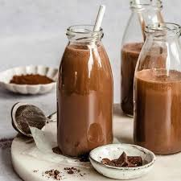

CHOCOLATE MILK
Hi, I'm Khushi
I'm glad you are here, thankyou for joining me!
About the dish
Chocolate milk is generally made by mixing choice of milk with cocoa and sweeteners.

Ingredients
- Milk - 1 cup
- Cocoa powder - 1 tbspn
- choco powder - 2 tbspn
- Sugar - 2 tbspn
- Chocolate syrup - 3 tbspn(Optional)
Directions
- In a pan add 250 ml of milk.
- After 1-2 minutes, add 2 tbspn of sugar
- While sugar is melting take a cup and add cocoa and choco powder. Mix it well
- With the help of any spoon, add 4 spoon milk from the pan.
- Mix powder and milk till it forms a paste like structure.
- On the other side, milk is hot so turn the gas off.
- With blender, blend the milk so there is foam on the milk.
- Transfer the milk to the cup carefully.
- Decorate with chocolate syrup with is completely optional.
- Enjoy
More receipes My website